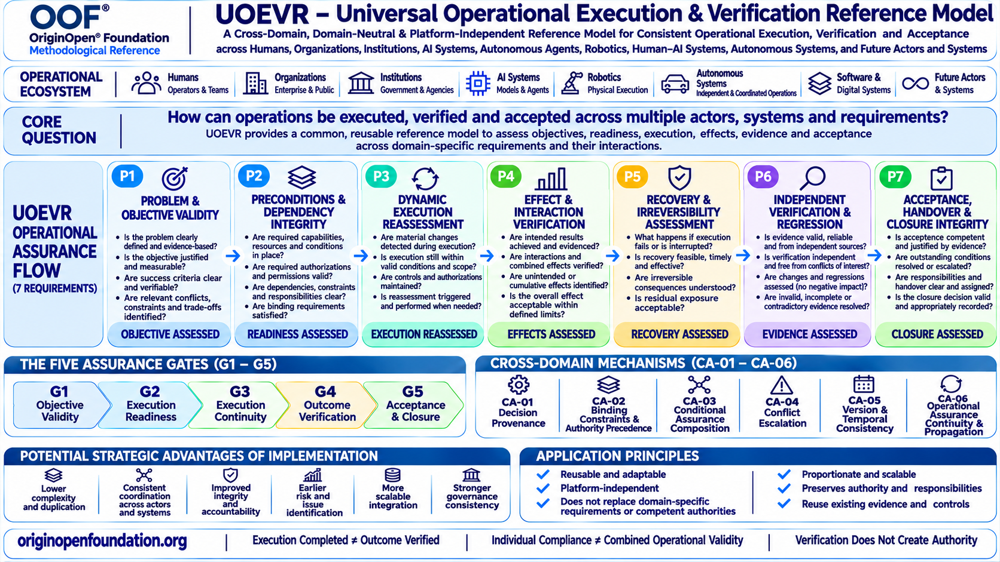

UOEVR — Universal Operational Execution & Verification Reference Model


Official OOF® Cross-Domain, Domain-Neutral & Platform-Independent Operational Execution and Verification Reference Model for Humans, Organizations, Institutions, AI Systems, Autonomous Agents, Robotics, Human–AI Systems, Autonomous Systems, and Future Actors and Systems
Organization: OOF® — OriginOpen® Foundation
Document Type: Official Reference Model — About
Classification: Universal · Cross-Domain · Domain-Neutral · Platform-Independent · Actor-Agnostic
Version: 1.0
Effective Date: 21.11.2026
Status: Canonical · Open Reference Model
Applicability: Human, Organizational, Institutional, Digital, AI-Enabled, Autonomous, Robotic, Physical and Hybrid Operational Environments
1. Introduction — A Common Reference for Modern Operations
Modern operational environments increasingly depend on interactions among humans, organizations, public institutions, artificial intelligence, autonomous agents, robotics, software, physical infrastructure and interconnected decision-making systems.
Each domain may operate under its own standards, technical requirements, legal obligations, authorization structures and verification procedures.
These requirements are necessary. However, satisfying them independently does not automatically establish that an operation involving several domains is valid as a whole.
A human operator may satisfy applicable competency requirements. A robot may pass its technical verification. An AI agent may operate within its assigned permissions. An autonomous vehicle may satisfy its operational controls.
Yet their combined operation may remain insufficiently verified.
The underlying challenge is not simply the absence of rules. It is the increasing complexity of relationships among rules, actors, decisions, dependencies, evidence, changing conditions and operational effects.
UOEVR — Universal Operational Execution & Verification Reference Model establishes a common methodological reference for examining these relationships across operational environments.
Its purpose is to support consistent assessment of whether an operation has a justified objective, satisfies relevant preconditions, remains appropriately controlled during execution, produces adequately verified effects and reaches a defensible acceptance or closure decision.
UOEVR does not replace domain-specific standards, legal requirements, safety systems or competent authorities. It provides a common reference logic through which their operational implications can be assessed together.
One Reference Model. Multiple Independent Domains. Consistent Operational Execution and Verification.
2. The Structural Problem — Fragmented Operational Assurance
Organizations frequently maintain separate systems for safety, quality, legal compliance, information security, operational control, technical verification, organizational responsibility and AI governance.
Each system may be internally coherent while addressing only part of a shared operation.
This fragmentation creates recurring challenges.
Duplicated verification logic. Similar questions concerning readiness, evidence, changes, corrective actions and acceptance may be addressed repeatedly through separate procedures.
Inconsistent decisions. Different control systems may use incompatible assumptions, evidence, versions or acceptance criteria.
Unclear responsibility. When an operation crosses organizational or technical boundaries, responsibility for combined effects and unresolved conditions may become difficult to establish.
Limited dependency visibility. An apparently successful assessment may rely on evidence, resources or authorization that has changed or become invalid elsewhere.
Increasing maintenance complexity. Every additional actor, technology, control system or regulatory obligation may introduce new interfaces and interactions requiring coordination.
These problems cannot necessarily be resolved by adding more isolated controls.
A larger collection of individually successful assessments does not automatically establish a valid combined operational conclusion.
Individual Compliance Does Not Guarantee Combined Operational Validity.
UOEVR addresses this distinction by providing a shared methodology for assessing operational integrity across relevant boundaries.
3. Universal Applicability Across Domains and Actors
UOEVR is designed to remain independent of any particular technology, platform, organization, industry or operational actor.
Its methodology can be applied to:
- Humans: professional activities, competency-dependent operations, supervisory decisions and human participation in complex systems.
- Organizations: institutional processes, interdepartmental operations, accountability, handover and coordinated decision-making.
- Public Institutions: administrative operations, cross-agency coordination, public accountability and evidence-based institutional decisions.
- AI Systems and Autonomous Agents: delegated activities, operational dependencies, evidence-based assessment and interactions with human or automated actors.
- Robotics: physical execution, shared workspaces, interaction risks, recovery and irreversible consequences.
- Autonomous Systems and Vehicles: changing environments, dynamic controls, intervention limitations and operational effects.
- Human–AI Systems: shared decisions, mixed responsibilities, human oversight and coordinated execution.
- Software and Digital Infrastructure: automated workflows, configuration changes, execution integrity, regression and system dependencies.
- Industrial and Critical Infrastructure: multi-system operations, shared resources, operational continuity and evidence-based acceptance.
- Future Actors and Systems: emerging technologies and operational configurations assessed through general principles without presuming their future requirements.
These domains are not treated as equivalent.
Their laws, technical standards, safety requirements, competencies, decision authorities and acceptable risk conditions may differ substantially.
UOEVR preserves those distinctions while offering a common way to examine objectives, readiness, dependencies, execution, effects, evidence and acceptance.
4. Practical Example — Human, Robot, AI Agent and Autonomous Vehicle
Consider an industrial facility where a human worker, robotic equipment, an AI coordination agent and an autonomous transport vehicle participate in one shared operation.
Each participant is governed by different requirements.
The human worker may require appropriate competence, instructions and protective measures.
The robot may require validated operating conditions, technical safeguards and applicable machinery safety controls.
The AI agent may require defined authority, trustworthy inputs and restrictions on autonomous decisions.
The autonomous vehicle may require appropriate navigation, interaction and operational safety controls.
The organization must coordinate responsibilities, operational procedures, changes, incident responses and acceptance decisions.
Individual compliance checks are necessary, but they may not sufficiently address interactions among these participants.
For example, a robot may operate within its verified parameters while an autonomous vehicle introduces an unexpected obstruction. An AI agent may issue a technically valid instruction that conflicts with a changed operational restriction. A human may receive information that was accurate when produced but is no longer applicable to the current combined configuration.
UOEVR provides a common methodological structure for examining whether the overall objective remains valid, relevant preconditions still hold, changes require reassessment, combined effects are sufficiently verified and the operation can legitimately be accepted.
It does not replace the robot's safety system, the vehicle's technical controls, the worker's responsibilities or the organization's competent authority.
Its role is to make the integrity of the combined operational assessment explicit.
5. The Seven Core Requirements
UOEVR organizes its methodological reference around seven interconnected requirements.
P1 — Problem & Objective Validity
Establishes whether the underlying problem has been correctly identified, the objective is justified, success criteria are meaningful and material conflicts or compromised decisions have been addressed.
P2 — Preconditions & Dependency Integrity
Examines relevant competencies, resources, configurations, authority dependencies, binding requirements, shared capacities and conditions required for operational readiness.
P3 — Dynamic Execution Reassessment
Addresses material changes during execution, monitoring limitations, reassessment triggers, control latency, authority continuity and the consequences of interruption, recovery or adaptation.
P4 — Effect & Interaction Verification
Distinguishes intended results from actual effects, including unintended consequences, cumulative impacts, duplicate execution and interactions across actors and systems.
P5 — Recovery & Irreversibility Assessment
Examines failure states, recovery feasibility, residual exposure, safe-state limitations and consequences that cannot be fully reversed.
P6 — Independent Verification & Regression
Addresses evidence integrity, independence, contradictions, verification coverage, corrective retesting, circular assurance, invalidated evidence and cross-boundary propagation.
P7 — Acceptance, Handover & Closure Integrity
Examines competent acceptance, unresolved conditions, responsibility, handover, decision-time validity, historical integrity and the distinction between legitimate subsequent verification and impermissible retroactive justification.
Together, these requirements form a common reference for evaluating operational integrity without prescribing one universal technical implementation.
6. Assurance Gates and Cross-Domain Consistency
UOEVR identifies five logical assurance gates:
G1 — Objective Validity
G2 — Execution Readiness
G3 — Execution Continuity
G4 — Outcome Verification
G5 — Acceptance & Closure
These gates are methodological decision boundaries, not a requirement to create five additional administrative approval committees.
An organization may implement them through existing workflows, control systems and competent decision structures.
The model also defines six cross-architecture mechanisms:
- CA-01 — Decision Provenance
- CA-02 — Binding Constraint & Authority Precedence
- CA-03 — Conditional Assurance Composition
- CA-04 — Conflict Escalation
- CA-05 — Version & Temporal Consistency
- CA-06 — Operational Assurance Continuity & Propagation
Thirty-eight integrity rules preserve essential distinctions, including:
- Execution completed does not mean outcome verified.
- Readiness does not establish execution authority.
- Individual success does not establish collective success.
- Correlated evidence does not constitute independent corroboration.
- Conditional findings do not establish unconditional combined acceptance.
- Circular assurance does not constitute independent verification.
- Previously valid evidence is not necessarily valid at decision time.
- Sending an invalidation notice does not prove that dependent decisions were reassessed.
- Successful future verification cannot retroactively create missing authorization.
These principles prevent unsupported favorable conclusions rather than forcing every situation into a positive outcome.
7. Strategic Value — Why a Common Reference Model Matters
The strategic value of UOEVR lies in the possibility of reusing common operational assessment logic across multiple independent domains.
Without a common reference, organizations may repeatedly develop separate procedures for readiness, evidence evaluation, change control, verification, escalation and acceptance.
As additional technologies and requirements are introduced, these procedures may become increasingly difficult to coordinate.
A shared Reference Model provides an alternative.
Instead of repeatedly designing the same foundational logic, organizations can map existing domain-specific requirements and controls to a common methodological structure.
This approach offers several potential advantages.
Reduced duplication of development
Common verification concepts can be reused across operational domains rather than independently recreated for every new system or department.
Lower long-term maintenance complexity
Changes affecting shared methodology can be managed consistently, while domain-specific changes remain within their proper scope.
Improved operational coordination
Different systems and organizational units can use compatible concepts of evidence, conditions, dependencies, validity and acceptance.
Stronger auditability and accountability
Decision makers can distinguish supported conclusions, unresolved conditions, evidence limitations and responsible authorities.
Earlier identification of systemic weaknesses
Interactions among systems, organizations and requirements can be examined before they produce incidents, disputes or costly corrective programs.
More scalable technology integration
New technologies and operational actors can be incorporated through domain-specific requirements without automatically requiring a completely new foundational verification methodology.
Improved governance consistency
A common reference reduces the risk that equivalent operational questions are answered through incompatible procedures or assumptions.
These benefits are intended advantages, not guaranteed economic outcomes. Their realization depends on implementation quality, organizational complexity, existing controls and integration costs.
8. Preventive Implementation — The Value of Acting Before Problems Occur
Organizations often recognize weaknesses in operational coordination only after an incident, failed audit, disputed decision, unexpected system interaction or expensive corrective program.
Reactive remediation may require reconstructing historical evidence, identifying hidden dependencies, resolving conflicting responsibilities and redesigning processes under time pressure.
Where an organization lacks a coherent cross-domain operational assurance methodology, adopting a proportionate reference model during system design or process development may be more efficient than attempting to reconcile fragmented controls after substantial operational dependencies have accumulated.
UOEVR supports this preventive approach by encouraging organizations to identify operational requirements, dependencies, decision boundaries and verification responsibilities before they become sources of failure.
However, early implementation must remain proportionate.
A small organization with limited operational complexity may require only a lightweight application. A large institution operating across many technical and organizational boundaries may benefit from a more comprehensive implementation.
Existing controls, evidence sources and competent decision structures should be reused wherever adequate.
New mechanisms should address identifiable gaps rather than create unnecessary administrative activity.
The objective is not to maximize the number of controls. It is to improve the quality, consistency and effectiveness of necessary controls while avoiding unnecessary duplication.
The cost of governance is determined not only by the number of rules, but also by the complexity of their interactions, dependencies, verification and continuous maintenance.
9. Institutional and Public-Sector Relevance
Public institutions frequently coordinate activities across departments, agencies, contractors, technology providers and external stakeholders.
These environments may involve overlapping statutory responsibilities, administrative requirements, technical systems and public accountability obligations.
UOEVR can provide a common methodological reference for examining how operational decisions interact across these boundaries.
Potential applications include institutional service delivery, procurement implementation, public infrastructure operations, digital transformation, interagency coordination, automated administrative processes and human–AI collaboration.
For example, an automated administrative workflow may perform its assigned technical function correctly while relying on outdated authorization, incomplete records or an unresolved institutional dependency.
A common reference model helps distinguish technical completion from a defensible operational decision.
UOEVR does not establish public authority, replace applicable law or determine legal precedence.
Its role is to support transparent assessment, evidence traceability, identification of unresolved conditions and referral to competent decision makers.
10. Relationship to OOF® Architectures and Standards
UOEVR is a Reference Model, not an independent OOF® governance architecture composed of Parent Standards and Core Modules.
OOF® architectures retain their own normative domains, standards, modules, authority boundaries and technical requirements.
UOEVR provides a reusable methodological reference that those architectures may apply when evaluating operational execution and verification.
This relationship is complementary rather than hierarchical.
A domain-specific architecture determines the requirements applicable within its governed space. UOEVR supports consistent assessment of operational readiness, execution integrity, evidence, interactions and acceptance where those requirements are implemented.
The model does not automatically inherit authority from an architecture, nor does it grant authority to one architecture over another.
Where requirements conflict, the conflict must be classified, preserved and referred through applicable competent procedures.
The same approach may support future institutional, industrial or technological governance architectures without requiring UOEVR to become a separate standard for every new domain.
11. Platform Independence and Implementation Flexibility
UOEVR is platform-independent by design.
It does not require a particular software vendor, AI model, programming language, cloud provider, database or automation platform.
Organizations may apply its methodology through existing governance procedures, structured documentation, software workflows, decision-support tools or specialized operational systems.
Automated implementations may support evidence mapping, dependency tracking, reassessment triggers, verification records and decision traceability.
However, automation alone does not establish independence, accuracy, competence or authority.
Implementation must preserve applicable security, privacy, legal, safety and organizational requirements.
A reference model can guide assessment, but actual operational controls must be designed, implemented and verified within the relevant environment.
12. Verification, Evidence and Responsible Claims
UOEVR v1.0 was developed through iterative methodological review and internal conceptual adversarial testing.
These exercises examined human, organizational, AI-agent, robotic and cross-domain situations, including conflicting requirements, circular assurance, invalidated evidence, delayed notifications, changing operational conditions and retrospective verification.
Known critical conceptual gaps were addressed through revisions to the model.
This provides documented internal reasoning support for its current specification.
It does not constitute independent scientific validation, certification, empirical proof of implementation effectiveness or evidence of measured organizational cost savings.
A real implementation requires appropriate verification of its actual controls, evidence sources, operational behavior and domain-specific obligations.
UOEVR also recognizes that some situations cannot be conclusively resolved.
Missing evidence, unresolved legal authority, uncertain dependencies or physically unavoidable consequences may require conditional findings, escalation or explicit unresolved status.
A credible reference model must preserve these limits rather than manufacture certainty.
13. Long-Term Relevance and Evolution
UOEVR is designed around operational questions that are not dependent on a specific generation of technology.
Who or what is acting? What objective is being pursued? Which conditions must hold? What changes during execution? What effects actually occur? What evidence supports the conclusion? Who is competent to accept the result?
These questions remain applicable across many present-day domains and offer a foundation for assessing emerging operational systems.
Long-term relevance, however, cannot be guaranteed by design alone.
Future technologies, legal frameworks, institutional practices and evidence methods may introduce requirements that are not yet foreseeable.
UOEVR therefore distinguishes stable methodological principles from domain-specific requirements and implementation mechanisms that may evolve.
Its continued usefulness depends on disciplined version management, evidence-based revision and practical validation.
The objective is not an unchangeable model, but a stable reference foundation capable of accommodating justified developments without losing its core distinctions.
14. Conclusion — From Fragmented Controls to Coherent Operational Assurance
The increasing complexity of modern operations cannot be addressed solely by multiplying independent rules and control systems.
Where people, organizations, AI agents, autonomous technologies and physical systems interact, the relationships among their requirements become part of the operational problem.
UOEVR provides a common methodological reference for examining these relationships.
It supports the reuse of foundational verification logic, preserves domain-specific responsibilities and helps distinguish individual compliance from combined operational validity.
Its potential value lies in improving coherence, reducing avoidable duplication, making dependencies visible and supporting decisions whose evidence, limitations and authority can be examined.
UOEVR does not promise that every operation can succeed, every conflict can be resolved or every risk can be eliminated.
It establishes a more disciplined basis for determining what is justified, what remains uncertain and what must not be accepted without sufficient support.
One Reference Model. Multiple Domains. Consistent Operational Verification.
15. Further Evaluation, Implementation & Institutional Cooperation
Organizations, institutions, technology developers and independent implementation partners interested in applying UOEVR may contact OOF® — OriginOpen® Foundation for further discussion.
Potential cooperation may include:
- Evaluation of UOEVR applicability to specific organizational or institutional environments.
- Cross-domain operational assessment and identification of methodological gaps.
- Development of implementation approaches for concrete operational requirements.
- Integration with existing governance systems, domain-specific standards and verification processes.
- Research, pilot evaluations and evidence-based methodological improvement.
- Third-party implementation arrangements, technical cooperation and contractual discussions.
For further evaluation, implementation guidance, concrete solutions, institutional cooperation or third-party implementation contracts, please contact OOF® — OriginOpen® Foundation.
Official Website: https://originopenfoundation.org
Any implementation, assessment or cooperation arrangement must define its applicable scope, responsibilities, competent authorities, evidence requirements and contractual conditions. Reference model adoption does not itself constitute certification, authorization or a guarantee of operational outcomes.
OOF® — OriginOpen® Foundation
Execution Completed ≠ Outcome Verified.
Individual Compliance ≠ Combined Operational Validity.
Verification Does Not Create Authority.